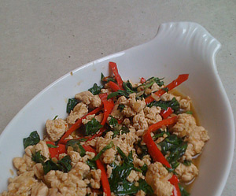

Gebratenes Hühnerfleisch mit Basilikum (Kai Phad Kaphrao)
5 von 64 frische kleine Chillies und 4 Knoblauchzehen im Mörser zerstossen und in Öl andämpfen. Das Hühnerfleisch mit einem Messer fein hacken, in die Pfanne geben, braten bis es gar ist. 1 El Austernsauce, 1/2 Tl Fischsaue, 1/4 Tl Sojasauce sowie ca. 20 g Thai-Basilikumblätter beigeben, nochmals etwas dämpfen, mit Reis servieren.
